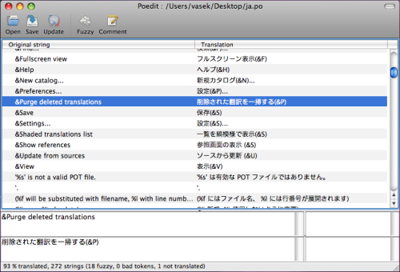

I18n¶
Phong cách GNU gettext được sử dụng. Không giống như các cách i18n khác, gettext hỗ trợ nhiều định dạng khác nhau.
Viết các internationalized messages vào source code¶
xitrum.Action kế thừa xitrum.I18n, và khi đó có 2 method sau:
t("Message")
tc("Context", "Message")
t("Hello %s").format("World")
// 1$ and 2$ are placeholders
t("%1$s says hello to %2$s, then %2$s says hello back to %1$s").format("Bill", "Hillary")
// {0} and {1} are placeholders
java.text.MessageFormat.format(t("{0} says hello to {1}, then {1} says hello back to {0}"), "Bill", "Hillary")
t("%,.3f").format(1234.5678) // => 1,234.568
t("%,.3f").formatLocal(java.util.Locale.FRENCH, 1234.5678) // => 1 234,568
// Above, you explicitly specify locale.
// If you want to implicitly use locale of the current action:
// when English => 1,234.568, when French => 1 234,568
t("%,.3f", 1234.5678)
Bạn có thể gọi trực tiếp 2 method trên từ trong action.
Trong khi các nơi khác như model, bạn cần truyền current action vào đó và gọi t và
tc.
// In an action
respondText(MyModel.hello(this))
// In the model
import xitrum.I18n
object MyModel {
def hello(i18n: I18n) = i18n.t("Hello World")
}
Triển khai các message đến tập tin pot¶
Tạo một tệp i18n.pot trong thư mục gốc của project, sau đó biên dịch lại cả project.
sbt/sbt clean
rm i18n.pot
touch i18n.pot
sbt/sbt compile
Lệnh sbt/sbt clean dùng để xóa tất cả các tệp .class , yêu cầu SBT biên dịch lại cả
project. Vì sau sbt/sbt clean, SBT sẽ thử tải lại toàn bộ dependencies,
bạn có thể tiến hành nhanh hơn một chút với lệnh find target -name *.class -delete,
nó sẽ xóa toàn bộ các tệp . class trong thư mục target.
Sau khi biên dịch lại, i18n.pot sẽ được lấp đầy với các gettext message từ mã nguồn. Để làm điều này, Scala compiler plugin technique được sử dụng.
Tuy nhiên, phương pháp này sẽ chỉ trích rút dữ liệu từ mã nguồn. Nếu bạn có các
tập tin Java, bạn có thể sử dụng câu lệnh xgettext để trích xuất dữ liệu:
xgettext -kt -ktc:1c,2 -ktn:1,2 -ktcn:1c,2,3 -o i18n_java.pot --from-code=UTF-8 $(find src/main/java -name "*.java")
Sau đó bạn gộp tệp i18n_java.pot và tệp i18n.pot.
Lưu các tệp .po tại đâu¶
i18n.pot là một tệp bản mẫu. Bạn cần sao chép nó đến tệp <language>.po và dịch.
Xitrum theo dõi thư mực có tên i18n trong classpath.
Nếu một tệp <language>.po trong thư mục đó được thay đổi hoặc được thêm vào ở runtime,
Xitrum sẽ tự động tải lại tệp <language>.po đó.
src
main
scala
view
resources
i18n
ja.po
vi.po
...
Sử dụng công cụ như Poedit để edit các tệp .po. Bạn cũng có thể sử dụng nó để hợp các tệp pot mới vào tệp po cũ.

Bạn có thể đóng gói các tệp .po trong nhiều tệp JAR. Xitrum sẽ tự động gộp chúng khi chạy.
mylib.jar
i18n
ja.po
vi.po
...
another.jar
i18n
ja.po
vi.po
...
Chọn ngôn ngữ¶
Để lấy cấc ngôn ngữ trong
Accept-Languagerequest header bởi browser, gọi hàmbrowserLanguages. Kết quả sẽ được sắp xếp theo mức ưu tiên đặt bởi trình duyệt từ cao xuống thấp.Ngôn ngữ mặc định là "en". Để chuyển ngôn ngữ, ví dụ Nhật Bản, gọi
language = "ja"Để tự đặt ngôn ngữ phù hợp nhất trong resource, gọi
autosetLanguage(availableLanguages), vớiavailableLanguageslà một list các ngôn ngữ có trong thư mụcresources/i18nvà các tệp JAR. Nếu không có ngôn ngữ nào phù hợp, ngôn ngữ vẫn mặc định là "en".Để lấy ngôn ngữ hiện thời được đặt bên trên, sử dụng
language.
Trong action, thông thường trong một before filter, để đặt ngôn ngữ:
beforeFilter {
val lango: Option[String] = yourMethodToGetUserPreferenceLanguageInSession()
lango match {
case None => autosetLanguage(Locale.forLanguageTag("ja"), Locale.forLanguageTag("vi"))
case Some(lang) => language = lang
}
}
Validation messages¶
jQuery Validation plugin cung cấp i18n error messages. Xitrum tự động thêm các tệp message tương ứng vào ngôn ngữ hiện thời.
Với validator mặc định ở phía server trong package xitrum.validator, Xitrum cũng
cung cấp bản dịch tương ứng.
Với đa số form¶
tn("Message", "Plural form", n)
tcn("Context", "Message", "Plural form", n)
Xitrum chỉ có thể chạy đúng với đa số form sau:
Phần lớn các form thường nằm trong số sau:
nplurals=1; plural=0
nplurals=2; plural=n != 1
nplurals=2; plural=n>1
nplurals=3; plural=n%10==1 && n%100!=11 ? 0 : n != 0 ? 1 : 2
nplurals=3; plural=n==1 ? 0 : n==2 ? 1 : 2
nplurals=3; plural=n==1 ? 0 : (n==0 || (n%100 > 0 && n%100 < 20)) ? 1 : 2
nplurals=3; plural=n%10==1 && n%100!=11 ? 0 : n%10>=2 && (n%100<10 || n%100>=20) ? 1 : 2
nplurals=3; plural=n%10==1 && n%100!=11 ? 0 : n%10>=2 && n%10<=4 && (n%100<10 || n%100>=20) ? 1 : 2
nplurals=3; plural=(n==1) ? 0 : (n>=2 && n<=4) ? 1 : 2
nplurals=3; plural=n==1 ? 0 : n%10>=2 && n%10<=4 && (n%100<10 || n%100>=20) ? 1 : 2
nplurals=4; plural=n%100==1 ? 0 : n%100==2 ? 1 : n%100==3 || n%100==4 ? 2 : 3
Định dạng ngày và số¶
Nếu bạn sử dụng Scalate template engine, mặc định ngày và số sẽ được định dạng theo ngôn ngữ hiện thời.
Nếu bạn muốn sử dụng định dạng khác:
import java.text.{DateFormat, NumberFormat}
val myDateFormat = ...
val myNumberFormat = ...
val options = Map("date" -> myDateFormat, "number" -> myNumberFormat)
respondView(options)